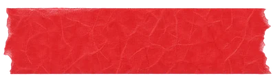
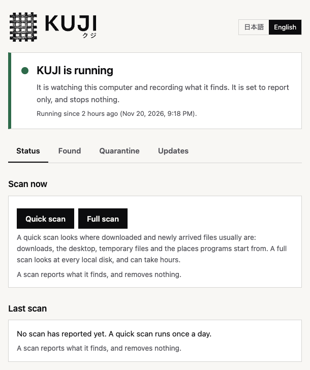

AI-driven antivirus by SORAMITSU
On-device AI.
Even offline.
KUJI examines files and follows what programs do. Its models run on the machine, even when the network is out of reach.
安倍晴明 Abe no Seimei Court onmyōji, 921–1005. Here he cuts the nine syllables KUJI is named for.
The name
Nine syllables.
Nine cuts.
KUJI is 九字, the nine syllables. In kuji-kiri they are cut in the air as nine strokes, five across and four down, alternating. The lattice they leave is KUJI’s mark.

On-device analysis
What makes a
program suspicious?
-
Inside the file
KUJI checks executable structure and byte patterns against detection rules. For Windows and Mac programs, a model on the machine adds a risk score and flags unusual ones for review.
-
While it runs
Related events can tell a different story than a single file. KUJI looks for patterns such as documents being rewritten while a related process targets backups.
-
On this machine
A backup tool contacting an unfamiliar server gives investigators a lead. KUJI learns local relationships after a delay and excludes activity linked to incidents.
Behavioral detection
Replay a
ransomware pattern.
Watch a recorded run of KUJI’s offline demo. A program rewrites documents across several folders while a related process targets backups.
KUJI connects the activity and reports two critical findings. All 294 events are simulated.
kuji sim ransomware_fast
kuji sim ransomware_fastThese are simulated events, and nothing here runs or touches a file.ATTACK ransomware_fast (294 events) [Critical] motif.recovery_destruction: Backups or recovery are being destroyed [Critical] motif.destructive_modification: Possible destructive file activity Behavior model scored 3 windows. 3 crossed its advisory threshold. Advisory for process group /tmp/svc1 (root PID 2012). files created (1), files overwritten (96), Distinct directories written to (13), Bytes written (6292356), renames (96), extension changes (96)294 events · 2 findings
The local app
A scan starts
right here.
A quick scan covers Downloads, the desktop, temporary files and startup locations. Choose a full scan to check local disks. The app reports findings and tells you where coverage is incomplete.


Air-gapped updates
Carry the update
across the gap.
Bring a signed release in on removable media, or distribute it through an internal share or portal. KUJI checks signatures from both SORAMITSU and your organization before it accepts the release.
Plain facts
-
Works with no internet access. Nothing leaves a host by itself.
-
Says what it cannot see.
kuji coveragereports on this exact host, and a scan has no “clean” verdict. -
Every signature is both Ed25519 and ML-DSA-65.
-
Runs alongside the security tools you already have. It does not replace them.